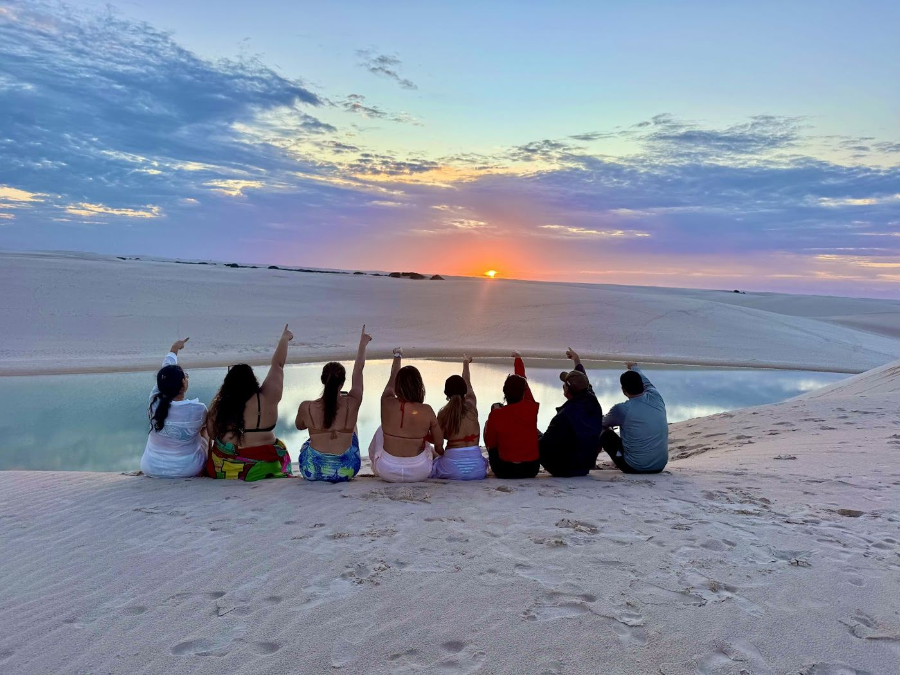
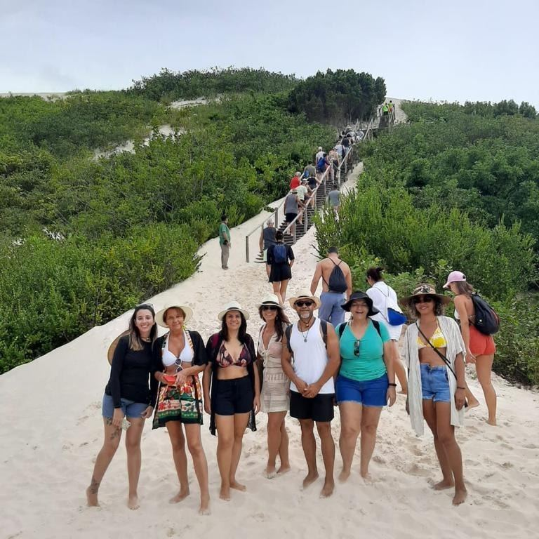
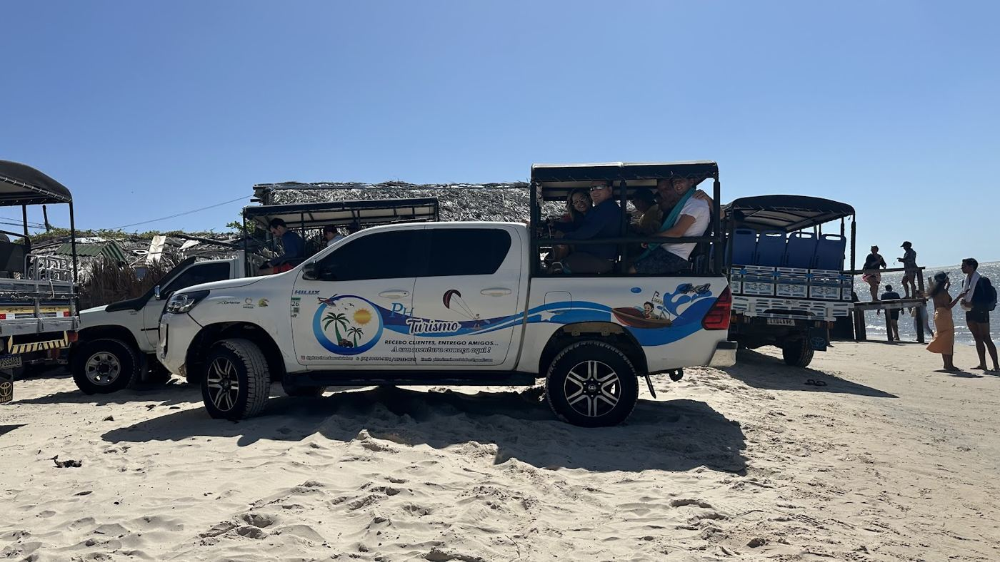
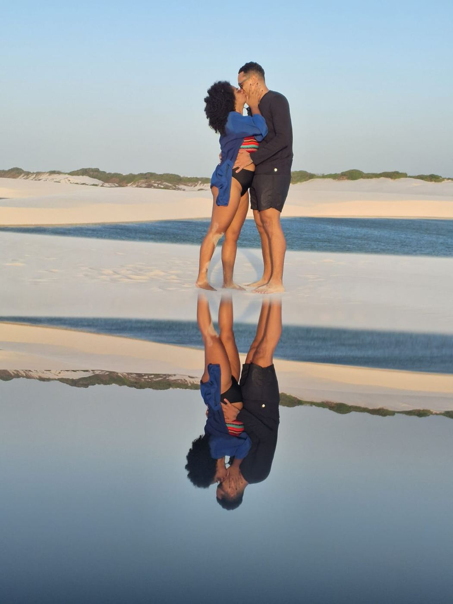
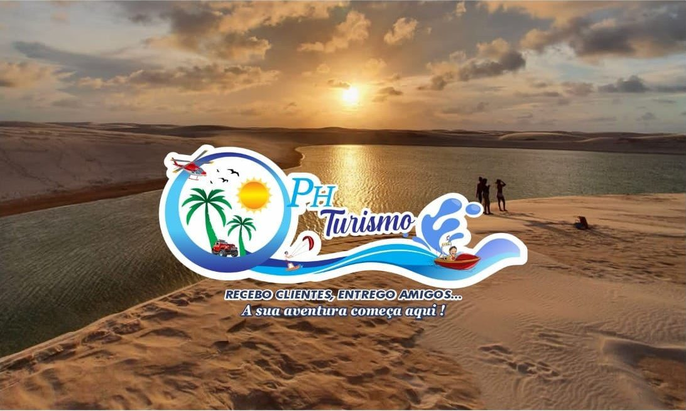

A sua aventura nos Lençóis começa aqui
Passeios em Barreirinhas, Atins e no Rio Preguiças com guias nativos da região. Recebemos clientes e entregamos amigos.
4,7 no Google, com 226 avaliações
Passeios
Escolha os passeios que quer fazer. Eles vão direto para o seu roteiro, organizados por dia.
Roteiros e durações de referência. A equipe da PH confirma horários, saídas e valores pelo WhatsApp.
Monte seu roteiro
Diga quando chega e quantos dias vai ficar. Organizamos os passeios por dia e você manda tudo pronto para a PH no WhatsApp.
Quem guia é daqui
- Guias nativosEmpresa de moradores da região, que conhecem as lagoas, as histórias e os melhores horários de cada lugar.
- Fotos pelo caminhoOs guias param nos melhores pontos e fazem as fotos do grupo nas dunas e nas lagoas.
- Compartilhado ou privativoSaídas em grupo ou carro só para você, com busca na sua pousada em Barreirinhas.



Quem passeou com a gente
★★★★★
“Fizemos 3 dias de passeio com a agência e foi uma experiência maravilhosa! Circuito Lagoa Azul e Lagoa Bonita, barco pelo Rio Preguiças e Caburé, e lagoas de Atins com pôr do sol e observação das estrelas.”
★★★★★
“Passeio maravilhoso de Barreirinhas até Atins. Guia super atencioso e motorista competente e responsável. Empresa de moradores nativos.”
★★★★★
“Contratei o passeio de barco pelo Rio Preguiças até a praia de Caburé, excelente. Na volta já contratei o 4x4 para ver o pôr do sol na Lagoa Bonita.”
★★★★★
“A equipe toda está de parabéns! Desde o primeiro contato eu já sabia que era com a PH que iríamos fazer os passeios.”

Passa na nossa loja
- Endereço
- Av. Brasília, 53, Centro, Barreirinhas (MA)
- Horário
- Todos os dias, das 7h às 22h
- (98) 98484-9076